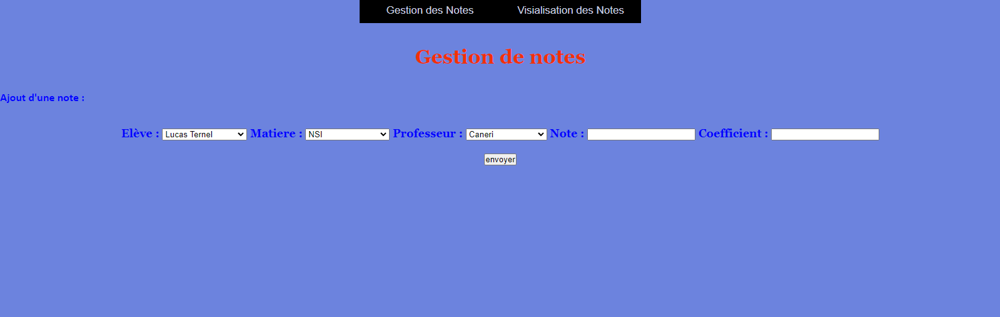
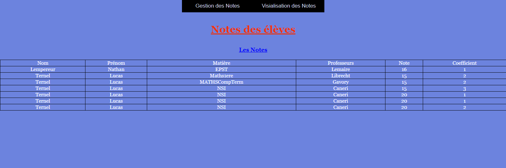
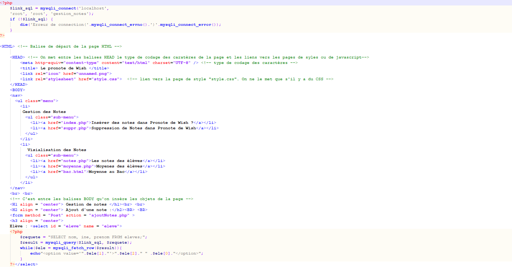
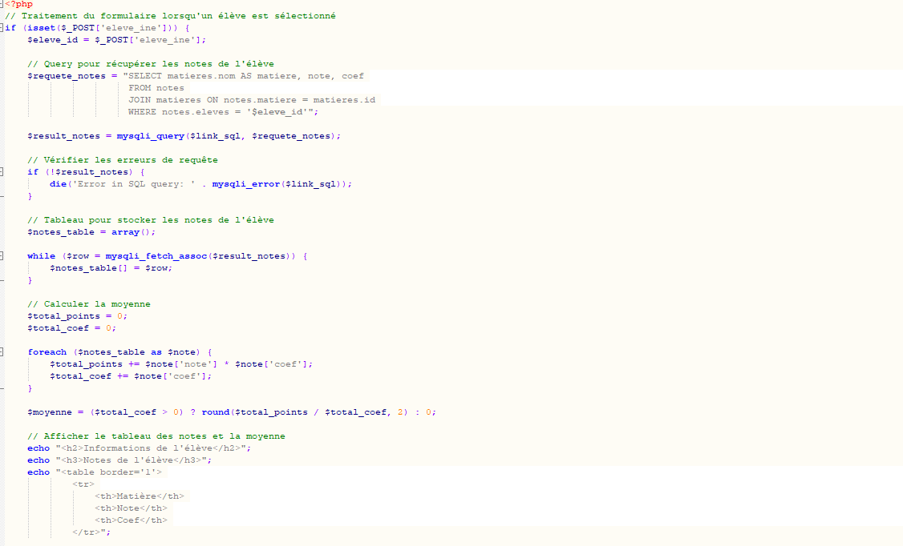

Site avec base de données
Ce projet est à l'origine de mon projet personnel codé en php, la page ne marche qu'avec l'activation d'uwamp et de mySQL.
Dans ce devoir, on a du aller plus loin que le programme et codé la premiere fois en php et le lier a la base de données.
Ce projet étant sous php et sql, l'implemétation sur github est impossible, vous aurez des photograpies.
Je pourrais vous montrer avec plaisir à l'entretien le site sous toutes ses formes.




Site internet
Ce site, crée en 1ère en classe de NSI, avec un peu de tout, ce que c'est l'architecture de neumann, colorer qu'un seul bloc de la page...
Le site si dessous :
Projet
Projet sur les Communes en France
Projet fait, en Première spé NSI, ou on devait crée des fonctions afin de classer les villes en fonctions de certains critère: latitude et longitude.
Plus au nord ou plus au sud.
Le projet est si dessous :
Projet
Grille de Sudoku en python
Ce projet, est le projet de fin d'année que l'on fait actuellement, vous pourrez voir l'avancé au moment où vous verez le dossier.
Le code est si dessous :
Projet